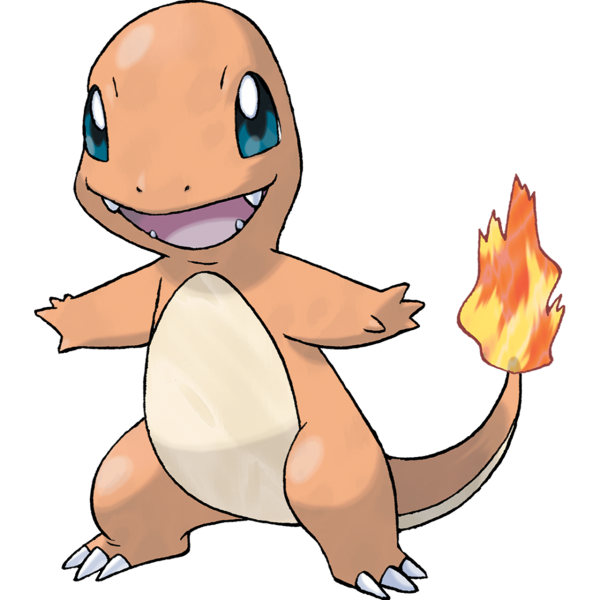

小火龙
小火龙是橙色的爬行动物，有一些恐龙的特征，特别像是那些兽脚亚目食肉恐龙。

吉尼龟
杰尼龟的样子就像是乌龟，身体是蓝色的，头部很圆，可以提高杰尼龟游泳的速度。

妙蛙种子
妙蛙种子是一只有点像蟾蜍或蓝绿色皮肤的小恐龙的爬行动物。
比卡丘 电系神奇精灵
皮卡丘和它的家族(皮丘和雷丘)，是唯一可以习得伏特攻击的神奇宝贝。在某些稀少的情况下，皮卡丘还可以学习控制水，在冲浪板的帮助下使用冲浪。还有的时候皮卡丘可以学习其他绝招，例如用气球使出飞翔。
吉尼龟 水系神奇精灵
杰尼龟可以喷水。它们是天生的游泳健将，但由于体型太小，它们只适合运送一些小型的物品。虽然它的下巴看起来很不起眼，但它可以学习咬咬。它的头很小，但可以使用火箭头槌。杰尼龟的壳能让它使用高速回转、守住、铁壁、缩壳等技能。它的尾巴很小很像松鼠，却可以学习水柱尾、铁尾一类的技能。
妙蛙种子 草系神奇精灵
因为妙蛙种子背上的种子，所以它可以学会大量的草系技能。无论是孢子还是气味，是花瓣还是种子，都能从种子的尖端释放出来。而藤蔓和叶片则来自于种子的底部（在漫画神奇宝贝特别篇中则是从种子的尖端）。
小火龙 火系神奇精灵
小火龙是它的家族中最温和的。它的健康和情绪，可以很容易地通过关注它的尾巴尖上的火焰而看出来。例如，如果火焰突然增长，那可能是激怒了小火龙，它甚至可能会使用愤怒攻击。在野外它是稀缺的。这只神奇宝贝大部分都是驯养的，为了给大木博士作为初学者神奇宝贝。
胖丁 妖精系神奇精灵
胖丁是圆形的粉色球状神奇宝贝，有小的猫耳和大眼睛。胖丁有有弹性的气球状皮肤。它们有小的短臂，但脚较大且没有尾巴。它有一束毛发状的卷毛在头顶。胖丁的体内可能都是空气，因为在神奇宝贝竞技场中打倒胖丁后它会掉到地上像一个瘪掉的气球或一张纸片。